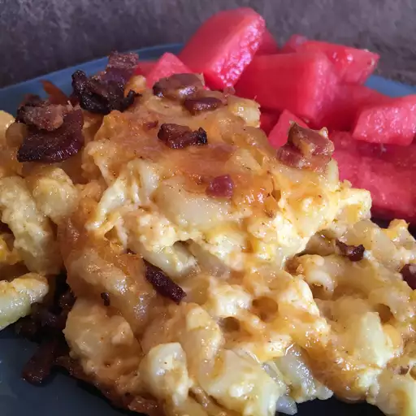

Home
Smoked Mac and Cheese

Description
Mac and cheese has a specific flavor and texture that is not only delicious but super nostalgic for many of us.
But why stop there? Let's upgrade it by smoking it.
Ingredients
- 1 package sliced bacon (alt, beef bacon)
- 1 package elbow macaroni
- 2 cups of heavy cream
- 1 package shredded extra-sharp Cheddar cheese
- 1 package shredded Colby-Jack cheese
- 1 cup sour cream
- 1 cup mayonnaise
- 2 tablespoons unsalted butter
- 2 tablespoons barbecue rub
Steps
- Preheat the oven to 200 degrees C. Line a baking sheet with aluminum foil.
- Preheat a smoker to 275 to 135 to 150 degrees C according to the manufacturer's instructions. Add wood chips
according to instructions.
- Lay bacon strips in a single layer on the prepared baking sheet.
- Bake in the preheated oven until browned and crisp, about 15 minutes. Drain bacon on paper towels; cool
slightly, about 5 minutes. Place in the bowl of a food processor; pulse until crumbly.
- Meanwhile, bring a large pot of lightly salted water to a boil. Cook elbow macaroni in the boiling water,
stirring occasionally, until tender yet firm to the bite, about 8 minutes. Drain.
- Combine cream, Cheddar cheese, Colby-Jack cheese, sour cream, mayonnaise, butter, and barbecue rub in the
warm pasta pot; add drained macaroni. Stir well until cheese melts. Transfer to a 9x13-inch aluminum pan;
sprinkle bacon on top.
- Place the pan on the rack in the preheated smoker; cook until cheese is bubbly, about 3 1/2 hours.